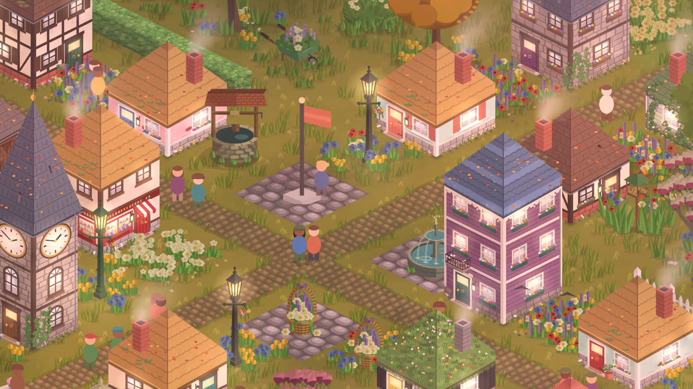

A cozy game for iPhone that you play by walking
A gentle town builder with no ads or construction timers, where everyday steps become something you can keep.

If you like arranging cottages, planting gardens and making a small place feel like home, StepHaven pairs that kind of play with your everyday walking. It is a town builder for iPhone: take a walk, then come back and decide what to add. You do not need to keep the game open while you walk.
Is there a cozy game that gets you outside?
StepHaven is one. It's a cozy town-building game for iPhone, and you play it by walking. With your permission, StepHaven reads steps recorded in Apple Health and turns them into points for your own little town. Go for a walk, come back, and build something with it.
What makes it cozy?
- Nothing is chasing you. No ads, no energy bars, no waiting for things to build, and nothing you've built wilts or breaks while you're away.
- The town keeps real time. Dawn and dusk follow your phone's clock, lamps come on at night, and the seasons change with the calendar, with snow in winter and fog on some autumn nights.
- It fills up with life. Villagers move into the homes you build, wander the lanes and head home after dark. Deer, foxes and rabbits wander in once there's enough green.
- It works offline. Building in your own town works offline. Shared towns and iCloud syncing need an internet connection; purchases also need a connection.
How do steps become building points?
With your permission, StepHaven reads steps recorded in Apple Health. One recorded step earns one point, and points buy items in the in-game shop. Buy a path, a tree or a cottage, then place it from your inventory. You choose the layout: your town does not grow into a fixed design automatically. Steps entered into Health by hand do not count.
You need an iPhone running iOS 26.5 or later. An Apple Watch is optional for walking: the iPhone you carry can record steps itself. Watch-recorded steps can count once they sync to Apple Health on your iPhone. Read how step counting and building work.
What do you actually do in it?
Build, arrange and decorate. Lay paths and plant gardens, dig ponds and rivers, put up cottages and shops, run a railway round the town or put boats on the water. In the Workshop you design your own houses: pick a shape, a style, a roof and the little touches like flower boxes and lanterns. Start with a path, flowers or a small house, then save points for a larger project. What a walk buys depends on the items you choose.
Do indoor steps count?
StepHaven uses recorded steps, not a route you must follow outdoors. Indoor walking can count when your iPhone or Apple Watch records it in Apple Health. Keep the device with you: a phone left on a desk cannot count the steps you take away from it. Recording accuracy depends on your device and how you carry or wear it.
Will a cozy game actually get me to walk more?
It can give you a reason to. In StepHaven the shop shows how long a walk each item is worth, the game remembers something you're saving for and tells you when you've walked enough, and the more you walked yesterday, the better your odds of a good daily present. It's a nudge, not a fitness plan, and nothing is taken away on a quiet day.
Can I play it in short bursts?
Yes, that's how it's meant to be played. Open it after a walk, place a few things, close it. There's a small present waiting by the town flag each day, and the occasional visitor to catch, but there's no streak to lose if you miss a day. Your steps keep counting whether or not you open the app.
Is there a cozy game I can build with friends?
Yes. In a StepHaven shared town, up to four people build in the same place. Everyone spends their own points and uses their own inventory; you do not need to walk together. Changes sync through iCloud when everyone is connected. The free game includes one shared town you can start. See how shared towns and invitations work.
What if I don't walk much?
It still works. Prices start small, so a quiet day still buys a bench, some flowers or a lamp, and your buildings stay put on quiet days. If you use a wheelchair, pushes recorded by an Apple Watch can earn points too. Ember also supports eligible workouts.
How is it different from Pikmin Bloom?
StepHaven focuses on arranging your own town after you walk. Pikmin Bloom focuses on collecting Pikmin and exploring a real-world flower map. If choosing where every cottage and garden goes is the part you enjoy, StepHaven may suit you. If you want an activity on the walk itself, compare the alternatives in our iPhone walking-game guide.
Is it free?
Yes, free to play on iPhone with no ads. StepHaven+ is an optional membership that adds more Workshop shapes and styles and more towns, and some item packs are sold separately. Points cannot be bought. Optional purchases add building variety and features; you still earn points through movement.
StepHaven: Cozy Town Builder
Free to play on iPhone, with optional purchases. No ads.
Download on theApp Store